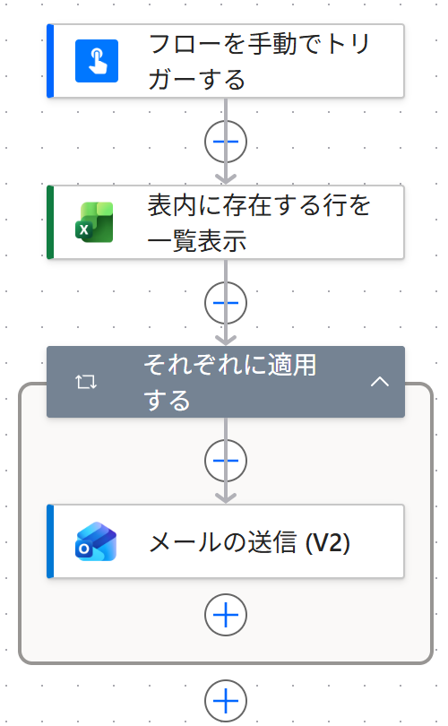

Vol.150-3
実際に作ったフロー：アクションは4つ

PA45 Demo 環境に作ったフローの画面です。
メールの送信はそれぞれに適用するの中に置くので、行の数だけ送られます
メールの送信はそれぞれに適用するの中に置くので、行の数だけ送られます

12341
フローを手動でトリガーする
送りたいときにボタンで起動
2
表内に存在する行を一覧表示
テーブル 送付先 の行を全部取る
3
それぞれに適用する
1行ずつ、くり返す
4
メールの送信 (V2)
宛先・件名・本文にその行の値を差し込む
一覧を直せば、次回も同じフローで送れる
宛先や日時を変えたいときは Excel を直すだけ
向いている人営業事務採用の面接案内セミナーの当日案内保護者への個別連絡
出典：Microsoft Learn